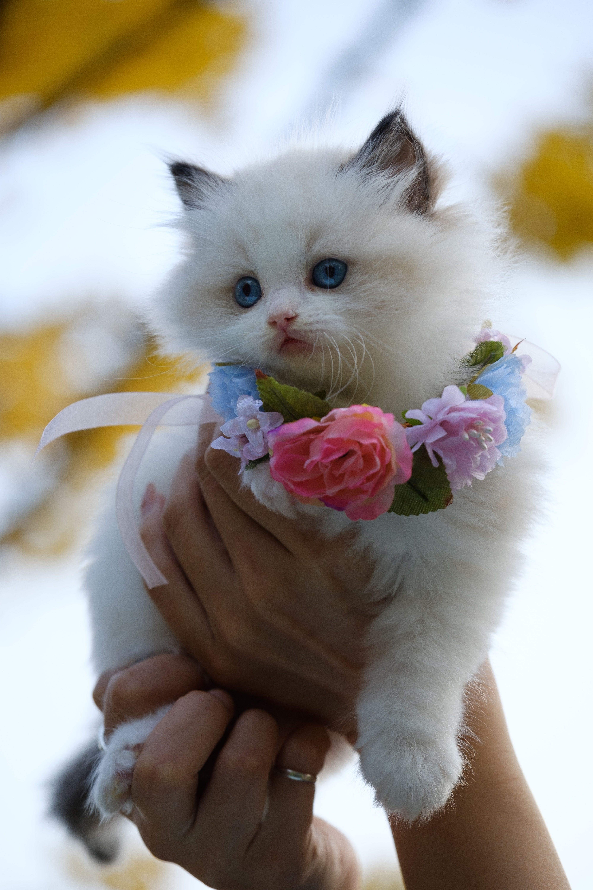

Cats are popular pets known for their independence, playful nature, and gentle companionship, often forming strong bonds with their owners. Cats are among the most cherished pets worldwide, admired for their elegance, intelligence, and affectionate behavior. They are small mammals with soft fur, sharp eyes, and sensitive ears, belonging to the species Felis catus. Many cats enjoy curling up in cozy spots, napping for hours, and occasionally bursting into energetic play. They communicate through purring, meowing, and body language, each with a unique personality. With proper care, cats make wonderful companions and bring comfort and joy to homes

